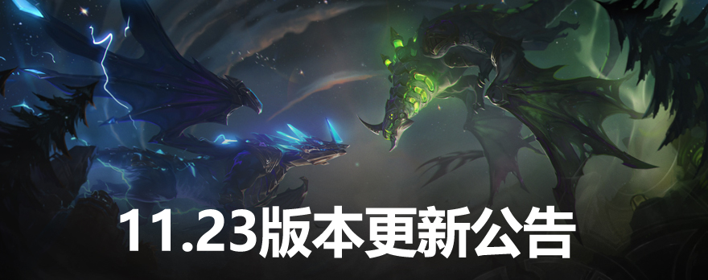
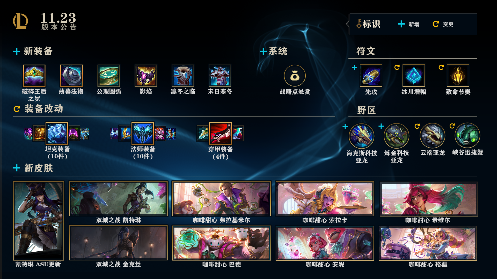

11.23版本更新公告：季前赛来袭，终极魔典回归！
LOL将在11月18日凌晨0点开始全区停机维护(请注意：11月17日23:30将关闭排位赛入口，不会影响正在进行中的排位赛)发布11.23版本，预计停机时间为00:00-12：00 。对于在停机期间结束的活动，其实际结束时间也将提前至停机维护开始时，敬请留意。
各位召唤师，2022季前赛来了，改动很大!
11.23版本将对峡谷带来广泛的改动，包括全新的【炼金科技亚龙】和【海克斯科技亚龙】、6件新装备、24件装备更新、3个符文改动，以及战略点悬赏!【终极魔典】也归来了，带着一些全新的终极技能还有一个对打野玩家们的特别招待!
此外，本周的《双城之战》也更进一步。新事件、游戏内的装饰性更新、机密的议会档案馆、还有交互式内容，都有助于各位进一步探索这个故事!
季前赛就是峡谷的“进化日”。有成吨的实验和发现来激发大家的创新之心!
说到创新，【云顶之弈：双城之战】的第一个平衡性版本在此。请点击这里阅读云顶之弈的版本公告!
注：国服的公告基于国服更新的实际版本数值，Riot游戏设计团队如在版本内对平衡性进行调整，国服运营团队将根据更新筹备进度发布版本内更新公告。后续可能基于实际运行效果进行优化，且不同机器配置下效果可能不同。
版本要闻
【咖啡甜心 格温】、【咖啡甜心 索拉卡】、【咖啡甜心 安妮】、【咖啡甜心 巴德】、【咖啡甜心 希维尔】、【咖啡甜心 弗拉基米尔】已在11.23版本内。
【双城之战 凯特琳】将在11月19日开始、【双城之战 金克丝】将在11月26日开始作为限时内容以供玩家获取。
走进双城
每个传说都有一个开端，而《英雄联盟》团队希望大家能畅享《双城之战》的开端。但除了这部剧，还有更多的背景故事!查看下方由《双城之战》启发的《英雄联盟》内容并走进双城吧!
- 议会档案馆：《双城之战》还远远不够?别着急，还有呢!查阅《英雄联盟》客户端中的【议会档案馆】，即可挖掘杰斯和蔚的背景故事，了解这些角色的更多详情。
- 终极魔典：它回来了!这个广受召唤师喜爱的轮换游戏模式带着新的终极技能归来，而这些终极技能里有很多都属于《双城之战》中的角色。查看下方的【终极魔典】章节来获得更多详情吧。
- 召唤师峡谷装饰物：《双城之战》已接管了召唤师峡谷和嚎哭深渊!小兵和防御塔等都已改头换面。也许大家已经注意到了全新的双城之战主题的载入界面、引文、和游戏内音乐。这些装饰物将持续到2021年12月9日。
- 凯特琳美术及可持续性更新：凯特琳也在这个版本获得了一个大型视觉更新，此外，杰斯和金克丝也获得了小型升级。可跳转到官网了解更多详情。点击跳转LOL官网